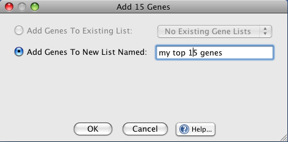
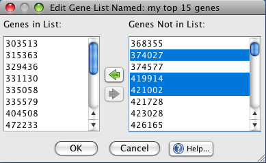

Add Button: clicking  will cause any genes selected on the Genes Not in List to be added to the list.
will cause any genes selected on the Genes Not in List to be added to the list.
Remove Button: clicking  will remove selected gene ID's from the gene list.
will remove selected gene ID's from the gene list.
Gene lists are simply lists of gene names. These lists can be created from a volcano plot or test results table. The image below shows the dialog used to create a new gene list (or add genes to an existing list):

Add Genes Dialog
Add Genes To Existing List: Use this option to add the genes to an existing list. This option is only available if there are already gene lists in the experiment that you are working on.
Add Genes To New List Named: Use this option to create a new list from the selected genes. The name that you choose here is the same name that will appear in J/maanova's project tree.

Edit Genes Dialog
Add Button: clicking will cause any genes selected on the Genes Not in List to be added to the list.
Remove Button: clicking will remove selected gene ID's from the gene list.